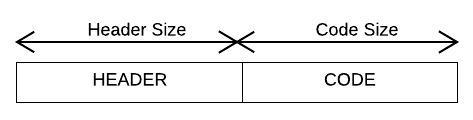
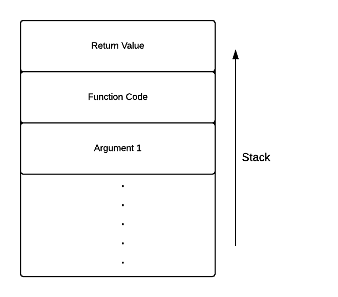
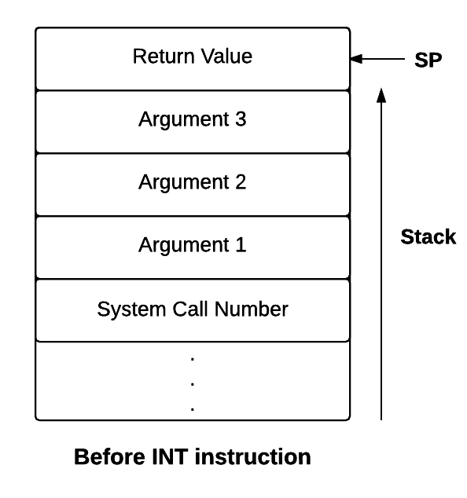
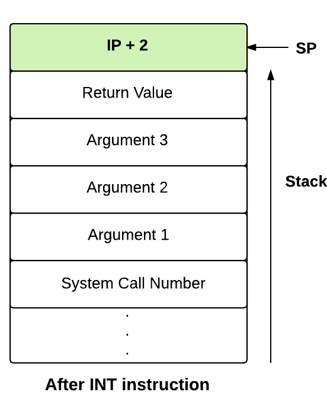

Introduction
The ExpL compiler needs to translate a given source program and generate the target machine code into an executable file in a format which is recognized by the load module of the target operating system. Thus, in order to generate the executable, the following information needs to be made available to the compiler :
- The machine instruction set of the target machine.
- The (virtual) address space model available for the target program. Conventionally, this address space is logically divided into regions like code, data, stack, heap etc.
- The format for the target file (executable format). The compiler typically passes information regarding the sizes and address regions allocated to the code, data, stack, text and heap regions to the loader by setting appropriate values in the header of the executable file.
- Interfaces for OS routines that needs to be invoked to get certain operations like input/output done. This is specified in the library interface documentation.
These specifications depend not only on the target machine architecture, but also on the operating system upon which the target machine code must execute. Typically these specifications are collected together in the OS specification into a document called the Application Binary Interface (ABI).
The following sections specify the ABI for the eXpOS operating system run on the XSM virtual machine model. The executable format is called the XEXE executable format.
The XSM virtual machine instruction set
The XSM virtual machine instruction set specifies the set of assembly level instructions. The compiler must translate the source ExpL program to a target program containing only these instructions. The assembly instructions allowed include Data Transfer Instructions, Arithmetic Instructions, Logical Instructions, Stack Instructions, Sub-routine instructions, Debug instructions and Software interrupts. The machine registers available to the target program are R0-R19, SP, BP and IP.
Data Transfer Instructions
| Addressing Type |
Syntax |
Semantics |
| Register Adressing |
MOV Ri, Rj |
Copies the contents of register Rj to Ri |
| Immediate Addressing |
MOV Ri, INTEGER/STRING |
Copies the INTEGER/STRING to the register Ri |
| Register Indirect Addressing |
MOV Ri, [Rj] |
Copy contents of memory location pointed by Rj to register Ri. |
| MOV [Ri], Rj |
Copy contents of Rj to the location whose address is in Ri |
| Direct Addressing |
MOV [LOC], Rj |
Copy contents of Rj to the memory address LOC |
| MOV Rj, [LOC] |
Copy contents of the memory location LOC to the register Rj |
Arithmetic Instructions
Arithmetic Instructions perform arithmetic operations on registers containing integers. If the register contains a non-integer value, an exception (illegal instruction) is raised.
| Instruction |
Syntax |
Semantics |
| ADD, SUB, MUL, DIV and MOD |
OP Ri, Rj |
The result of Ri op Rj is stored in Ri |
| OP Ri, INTEGER |
The result of Ri op INTEGER is stored in Ri |
| INR, DCR |
OP Ri |
Increments/Decrements the value of register Ri by 1 |
For all the above instructions, Ri/Rj may be any register except IP.
Logical Instructions
Logical instructions are used for comparing values in registers. Strings can also be compared according to the lexicographic ordering of ASCII. If one of the operands is a string, the other operand will also be considered as a string. The logical instructions are LT, GT, EQ, NE, GE and LE.
| Type |
Syntax |
Semantics |
| LT, GT, EQ, NE, GE, LE |
OP Ri, Rj |
Stores 1 in Ri if the value stored in Ri is less than/greater than/equal to/not equal to/greater than or equal to/less than or equal to that in Rj. Ri is set to 0 otherwise |
Branching Instructions
Branching is achieved by changing the value of the IP to the word address of the target instruction specified by 'target_address'.
| Type |
Syntax |
Semantics |
| JZ |
JZ Ri, target_address |
Jumps to target_address if the contents of Ri is zero |
| JNZ |
JNZ Ri, target_address |
Jumps to target_address if the contents of Ri is not zero |
| JMP |
JMP target_address |
Unconditional jump to target_address |
Stack Instructions
| Type |
Syntax |
Semantics |
| PUSH |
PUSH Ri |
Increment SP by 1 and copy contents of Ri to the location pointed to by SP |
| POP |
POP Ri |
Copy contents of the location pointed to by SP into Ri and decrement SP by 1 |
For both these instructions Ri may be any register except IP.
Subroutine Instructions
The CALL instruction copies the address of the next instruction to be fetched(this value must be IP + 2 since each instruction is two memory words) on to location SP + 1. It also increments SP by one and transfers control to the instruction specified by the target_address. The RET instruction restores the IP value stored at location pointed by SP, decrements SP by one and continues execution fetching the next instruction pointed to by IP
| Type |
Syntax |
Semantics |
| CALL |
CALL target_address |
Increments SP by 1, transfers IP + 2 to location pointed to by SP and jumps to instruction specified by target_address |
| RET |
RET |
Sets IP to the value pointed to by SP and decrements SP |
Debug Instruction
Syntax : BRKP
Semantics : The machine when run in debug mode invokes the debugger when this intruction is executed. This instruction can be used for debugging system code.
The virtual address space model
The (virtual) address space of any eXpOS process is logically divided into four parts namely Library, Heap, Code and Stack.

The Library contains routines for implementing dynamic memory allocation functions Alloc(), Free() and Initialize() as well as the input output functions Read() and Write(). The eXpOS loader links the library routines at load time when a program is loaded into the memory for execution. The compiler can therefore assume that the library code will be "there" at run-time and hence need not generate the code for implementing the library. The compiler however must generate code to invoke the correct library routines with appropriate arguments while translating the high level functions Alloc(), Free(), Initialize(), Read() and Write(). The ABI specifies how this must be done. Among these, Alloc(), Free() and Initialize() are implemented as part of the library itself. The library will re-direct Read() and Write() to low level OS system calls. (One of the advanced stages of the ExpL project will ask you to implement the library itself.) The ABI stipulates that eXpOS will load the library between addresses 0 and 1023 of the address space. Note that since each XSM instruction takes up two memory words, the library can be of size at most 512 instructions.
Heap is the portion of the address space reserved as the memory pool from which dynamic memory allocation is done by the allocator routine (Alloc() function) of the library. The memory region between addresses 1024 and 2047 is reserved for the heap. The routine Initialize() will intialize the data structures associated with the memory allocator, Alloc() will allocate memory and Free() will de-allocate a previously allocated memory block. A discussion on dynamic memory allocation and de-allocation can be found here.
The Code region contains the target assembly language program generated by the compiler. The OS loader loads the contents of an XEXE executable file into this region (between memory addresses 2048 and 4095) of the address space. The loader expects that the first eight words of the XEXE executable file contains a header. The header contains instructions to the loader like the address of the first instruction to be executed (the loader will initalize the instruction pointer to this value before execution) and so on. The total size of the code section (including the 8 word header) cannot exceed 2048 words. Since each XSM instruction occupies two words in the memory, the maximum number of assembly instructions permitted in any target program generated by the compiler shall be 1020. Given an ExpL program as input, the job of the compiler is to generate an XEXE executable file containing the header and the target assembly language program.
Stack is the space reserved for the runtime stack of a program. Parameters and local variables associated with functions in a program are allocated in the stack. In the XSM architecture, the stack grows upwards. The eXpOS ABI stipulates that the maximum stack size is 1024 words. Global variables must be allocated in the stack as the eXpOS ABI does not support a separate Data region. The ABI stipulates that the compiler must allocate stack in the region between memory addresses 4095 and 5119 in the address space of the program. A discussion on how the compiler must allocate variables in the stack can be found here.
XEXE executable file format
The compiler must generate target code into a file in the format specified below so that the eXpOS loader recognizes the format and load the program into memory for execution correctly. Each executable file contains a header in which the compiler adds information like the initial value to be given to the stack pointer in the virtual address space, initial value of the instruction pointer etc, the starting (virtual) addresses and sizes of various memory regions like text, stack, heap etc.
Executable files in eXpOS must be in the XEXE format as eXpOS executes only files of such format. An XEXE executable file in eXpOS consists of two parts:

The maximum size of the file (including the header) is limited by 2048 words.
The first eight words of an executable file are reserved for the header which describes the features of file. The structure of the header is :
XMAGIC is a number indicating the type of executable file. All XEXE files will have magic number 0. For more on Magic Number, click here.
Entry point contains the virtual address in memory of the first instruction to be executed (entry point) of the program after the OS loader has loaded it. During loading, the instruction pointer must be initialized to this address.
Text Size, Data Size, Heap Size and Stack size indicates the sizes of Text, Data, Heap and Stack regions to be allocated by the OS loader when the file is loaded for execution.
Note : The present eXpOS virtual address space model requires that the data and stack must be in the same memory area and must be managed by the compiler / application program (this means that the program must contain the code to initialize the value of the stack pointer). The value of Data Size field is ignored. Moreover, the eXpOS loader sets the size of text region to 2048 words and stack region to 1024 words in memory irrespective of the values present in the header.
If the Runtime Library must be included when the file is loaded, the Library Flag is set to 1 in the executable file. If this flag is not set then neither memory is allocated for the heap nor the library linked to the address space of the process at execution time.
In summary, the eXpOS loader maps an executable file into its virtual address according to the following table :
| Region |
Start Address |
End Address |
| Library* |
0 |
1023 |
| Heap* |
1024 |
2047 |
| Code |
2048 |
4095 |
| Stack† |
4096 |
5119 |
* If Library Flag is set to 1 in the executable header.
† The Stack Pointer is not initialised to the address 4096 by the eXpOS loader.
The library interface
The library provides a uniform interface through which an application program can invoke dynamic memory allocation / de-allocation routines (Alloc(), Free() and Initialize()) and input - output routines (Read() and Write()). Thus, while translating a high level ExpL program containing calls to the above functions, a compiler needs to be concerned only about how to translate these high level function calls to the corresponding library function calls.

The ABI stipulates that all calls to library functions must be translated by the compiler to a CALL to virtual address 0, with an appropriate function code that identifies the service requested (Alloc(), Free(), Initalize(), Read() or Write()). This is because the library is linked to virtual address 0 of the address space of a process by the OS loader. A call to the library requires four arguments (a function code to identify the service and three arguments) to be passed through the stack. The library will invoke the corresponding low level system call / memory management routine and returns to the user program the return value of the system call / memory management routine through the stack. The figure above shows the contents of the stack immediately before a call to this library routine.
The invocation details for the system calls and the dynamic memory management routines using the library interface can be seen here.
Invoking a library module
A library module invocation using the high level application programmer's interface of a programming language like ExpL must be translated by the compiler to to a set of machine instructions as given above.
Following are the library functions and details relevant for ExpL Compilation:
| Library Function |
Function Code |
Argument 1 |
Argument 2 |
Argument 3 |
Return Values |
| Read |
"Read" |
-1 |
Buffer (int/str)* |
- |
0 - Success |
-1 - File Descriptor given is invalid
| -2 - Read error
|
| Write |
"Write" |
-2 |
Buffer (int/str)* |
- |
0 - Success |
-1 - File Descriptor given is invalid
|
| Initialize |
"heapset" |
- |
- |
- |
0 - Success |
-1 - Failure
|
| Alloc |
"Alloc" |
Size (int) |
- |
- |
Address in the heap allocated (int) |
-1 - No allocation
|
| Free |
"Free" |
Pointer (int) |
- |
- |
0 - Success |
-1 - Failure
|
*Note: The Read() and Write() library functions expect a memory address from (or to) which read or write is performed.
After return from the library module
The following machine instructions are present after the CALL instruction in the ExpL compiled machine code given in the previous step.
The machine code shown above is executed upon return from the library call and pops out the values that were pushed before the call. The function code and arguments were inputs to the library module and hence they may be discarded now. The return value which is stored in the stack by the system call must be popped out and saved to some register. This value will be the only relevant information after return from the call.
Note: The eXpOS library interface permits many more functions (interfaces to eXpOS system calls). Since these functions are not relevant for the implementation of the ExpL specification here, those details are left out. The full details of eXpOS library are given here.
Low Level System Call Interface
The ExpL library file library.lib contains assembly instructions to implement the library functions
Alloc(), Free() and Initialize(). For the input/output functions Read() and Write(), the library code invokes the corresponding ExpOS system calls for console read and write. Thus, the library simply converts the
library call to a low level call to the operating system. This is because console input/ouput functions are implemented at the OS level.
In order to implement the library, one must know the low level system call interface to the operating
system so that the input/ouput calls to the library can be correctly translated to the corresponding
low level OS system calls. This section specifices the low level OS interface provided by the ExpOS
Operating System running on the XSM machine architecture. The interface describes the software interrupt instruction (trap) corresponding to the consolve input/output system calls and the calling conventions for passing arguments and extracting return values of the system call through the application program's stack. This part is architecture as well as operating system dependent.
System Calls
For an application program, there are two stages in executing a system call:
- 1. Before the system call : The calling application must set up the arguments in the (user) stack before executing the trap instruction.
- 2. After the system call : The return value of the system call must be extracted from the stack.
Invoking a system call
A user program invokes a system call by first pushing the system call number and then the arguments into the stack and then invoking the INT machine instruction corresponding to the system call. The eXpOS ABI stipulates that the number of arguments pushed into the stack is fixed at three.
PUSH System_Call_Number // Push system call number
PUSH Argument_1 // Push argument 1 to the stack
PUSH Argument_2 // Push argument 2 to the stack
PUSH Argument_3 // Push argument 3 to the stack
PUSH R0 // Push an empty space for RETURN VALUE
INT number // Invoke the corresponding INT instruction.
// The number can be any number between 4 and 18
The ExpL library must translate Read() and Write() calls to a set of machine instructions (see the instructions to the right). These are the stack operations that must be performed by the user program before the INT instruction is executed.

The arguments must be pushed into the stack in such a way that the last argument comes on the top. An additional push instruction ('PUSH R0') is inserted to have an empty space in the stack for the return value. The system call implementation stores the return value in this space. The system call number must be pushed to the stack before the call because the interrupt routine needs this value to identify the system call. The figure to the left shows the data stored in stack just before an INT instruction.

The INT instruction in XSM will push the value of IP + 2 on to the stack. This is the address of the instruction immediately following the INT instruction in the calling program. Each instruction is 2 words, hence IP is incremented by 2. Upon execution of the IRET instruction from the system call, execution resumes from this value of IP. The INT instruction changes mode from User mode to Kernel mode and passes control to the Interrupt Routine corresponding to the system call. The figure to the right shows the contents of the stack immediately after the execution of the INT instruction.
After return from the system call
The IRET instruction transfers control back to the instruction that immediately follows the INT instruction. The following machine instructions are present after the INT instruction in the ExpL compiled machine code given in the previous step.
POP Ri // Pop and save the return value into some register Ri
POP Rj // Pop and discard argument 3
POP Rj // Pop and discard argument 2
POP Rj // Pop and discard argument 1
POP Rj // Pop and discard the system call number
// Now the stack is popped back to the state before call
The machine code to the left pops the values from the stack. The system call number and arguments were inputs to the system call and hence they may be discarded now. The return value which is stored in the stack by the system call is fetched and used by the user program by popping out to some register.
System calls and their translation
Associated with each system call, there is a system call number and interrupt routine number. The system call number is used to identify a system call. The interrupt routine number denotes the number of the interrupt routine which handles the system call.
| System Call |
System Call Number |
Interrupt Routine Number |
Argument 1 |
Argument 2 |
Argument 3 |
Return Values |
| Read |
7 |
6 |
-1 |
Buffer (int/str)* |
- |
0 - Success |
-1 - File Descriptor given is invalid
| -2 - Read error
|
| Write |
5 |
7 |
-2 |
Buffer (int/str)* |
- |
0 - Success |
-1 - File Descriptor given is invalid
|
*Note: The Read() and Write() library functions expect a memory address from (or to) which read or write is performed.